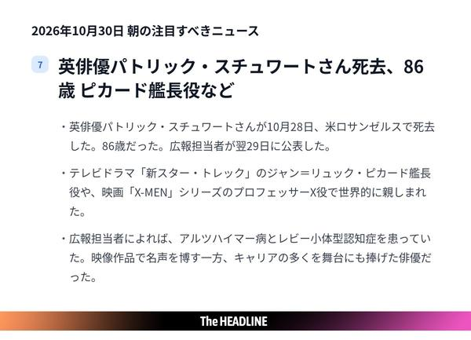
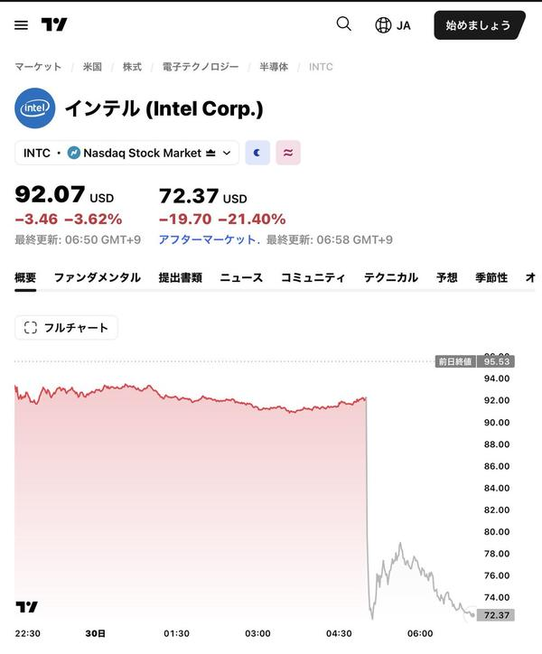
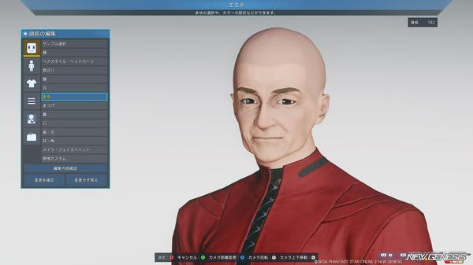
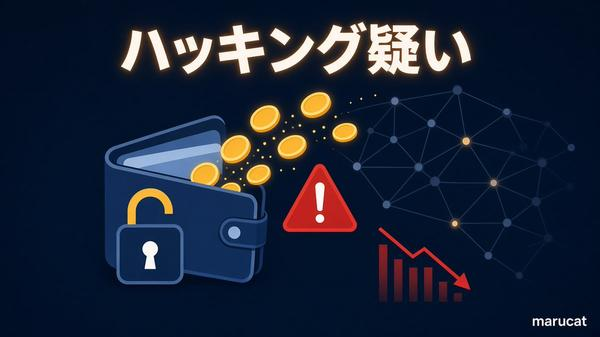

🇯🇵 日本の主要ニュース
「副首都」構想の関連法がきょう施行大規模災害時に首都の代替機能を担う「副首都」構想の関連法が30日に施行されました。政府は11月にも指定に向けたスケジュールを示す方針です。
出典：NHK
🌍 世界の主要ニュース
🤖 AIニュース
💻 PC・ガジェットニュース
ブラウザ「Arc」が12月22日に終了根強いファンがいたArcブラウザが提供を終えます。後継ブラウザDiaへの引き継ぎや他ブラウザへのデータ移行方法を解説しています。
出典：ギズモード・ジャパン
「モバイルXbox」が来年登場か2027年後半に登場すると噂される携帯型Xboxについての解説です。高価格になりそうな次世代据え置き機に代わる本命として注目されています。
出典：ギズモード・ジャパン
🔥 Xのトレンド（日本）
ジャンルで絞らず上位20件を掲載。「未確認」はX上の投稿だけを根拠にしたもので、報道機関による裏付けはありません。
『新スター・トレック』でピカード艦長を演じた英俳優パトリック・スチュワートさんが86歳で亡くなったと報じられ、追悼の投稿が相次いでいます。
出典：AP（Google News経由）
日本テレビ「ZIP!」で、Snow Manの阿部亮平さんと佐久間大介さんがメンバー一人ひとりを分析する特別企画が放送され、ファンの実況が集中しました。
⚠ 未確認（X情報のみ）
スチュワートさんが『X-MEN』シリーズで演じたプロフェッサーXの役名で、訃報とともにトレンド入りしています。
出典：AP（Google News経由）

英俳優パトリック・スチュワートさんが86歳で死去。ピカード艦長、プロフェッサーX役で日本でも人気があり、ヒュー・ジャックマンさんらも追悼しています。
出典：AP（Google News経由）
ローソン公式アカウントの新「得パン」シリーズのキャンペーン。フォローしてこの言葉付きで引用投稿すると抽選でQUOカードPay1万円分が当たるため、投稿が大量に流れています。
出典：ローソン公式X
スチュワートさんが出演した映画『アベンジャーズ/ドゥームズデイ』が「遺作になるのでは」と話題に。同名のゲームの配信告知も多く混ざっています。
⚠ 未確認（X情報のみ）
10月30日は「初恋の日」。島崎藤村の詩「初恋」にちなむ記念日で、イラストや思い出話の投稿が集まっています。
⚠ 未確認（X情報のみ）
Snow Manのラウールさんが王様役で1人6役を演じる「日清ラ王」の新しいWebCMが公開され、ファンが盛り上がっています。
⚠ 未確認（X情報のみ）
Number_iの神宮寺勇太（JIN）さんが10月30日で29歳の誕生日を迎え、お祝いの投稿があふれています。
⚠ 未確認（X情報のみ）
10月30日は「たまごかけごはんの日」。朝ごはんにTKGを食べた写真の投稿が並んでいます。
⚠ 未確認（X情報のみ）

米インテルが決算発表後の時間外取引で約20％急落。PC向け半導体の低迷で10〜12月期の見通しが予想を下回ったと日経などが報じています（サッカーのインテルの話題も一部混在）。
出典：日本経済新聞（Google News経由）
ラウールさんの愛称。上の「日清ラ王」新CMの話題で一緒にトレンド入りしています。
⚠ 未確認（X情報のみ）
神宮寺勇太さんの誕生日を祝うファンのハッシュタグ。無関係なハッシュタグを並べたスパム投稿も混ざっています。
⚠ 未確認（X情報のみ）
10月最後の金曜日。「きんようび」の朝のあいさつ投稿や、VTuberの朝配信の告知が多く見られます。
⚠ 未確認（X情報のみ）

ピカード艦長役のスチュワートさんの訃報を受け、『スタートレック』の思い出や追悼の投稿が増えています。
⚠ 未確認（X情報のみ）

暗号資産取引所最大手バイナンスのホットウォレットから数十億ドル規模の資金が流出した疑いがあり、出金の一時停止やTether・Circleによる資金凍結が報じられています。バイナンスは「ユーザー資金は安全」としています。
出典：TechCrunch（Google News経由）
「日清ラ王」×ラウールさんのキャンペーンで当たるオリジナルグッズの名前。ファンが「欲しい」と投稿しています。
⚠ 未確認（X情報のみ）
スチュワートさんが『X-MEN』でプロフェッサーXを演じていたことから、訃報とともにトレンド入りしています。
出典：AP（Google News経由）
10月30日は「香りの記念日」。好きな香りの話題や企業・キャラクターの記念日投稿が集まっています。
⚠ 未確認（X情報のみ）
timeleszの佐藤勝利さんが30歳の誕生日を迎え、ファンのお祝い投稿が続いています。
⚠ 未確認（X情報のみ）
Grok Bot がまとめました。